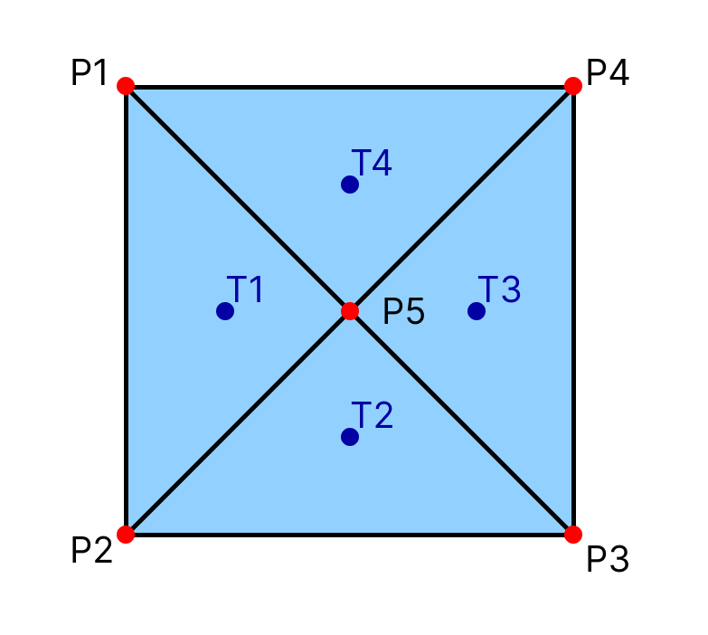

Shape Coefficient#
Shape coefficient describes the behavior of the resulting pressure applied to a surface. It can be interepreted as a resulting pressure coefficient inside a given region.
It allows us to assess how the local pressure at different points inside a region combine themselves.
Definition#
The shape coefficient is a dimensionless form of the resulting pressure signal.
Consider a rectangular surface composed by triangles. At each of its triangles’ center, pressure signals are obtained. However, we can calculate the resulting force by summing the pressure load of each triangle. To do so, pressure is transformed into a force by multiplying by the respective triangle area.
{kind=link}

We can define a resulting force for each triangle as:
Even so, we can define a resulting force for the surface, by summing its triangles forces:
Important
Some peaks (minimum or maximum) of the pressure coefficient signal can be cancelled when calculating the shape coefficient.
The shape coefficient is based on the definition of an area of influence. This area is delimited by x, y and z intervals. Each combination of the intervals results in a region.
Note
Check out the concepts section for more information about region and surface definitions.
To calculate the shape coefficient of a given region, the surface triangles which center lies inside this region must be filtered. Then, the resulting force is evaluated for the filtered triangles data. After that, the shape coefficient can be calculated. For the previous example, considering a case where only one region exists:
And we can obatin its maximum, minimum, RMS and average values.
Use Case#
By definition, the shape coefficient is a property of a surface or an area. It is used to evaluate wind loads on primary and secondary structures, such as beans, coating and sealing components.
Structural engineers might use the shape coefficient for wind load evaluation on superficial and long elements.
For smaller components, it is essential to define small intervals for the region definition, which size should be comparable to the component of interest size.
For example, to evaluate the effect of wind pressure on windows, the intervals used for defining the shape coefficient regions should be about the window size, in a way that all triangles that form the window lie inside of this region.
It can also be used to evaluate the resulting wind effect over coating elements, mounted on roofs or walls, such as panels. Or even to evaluate the resulting effect over doors, and calculate the stress over its hinges.
Artifacts#
The Ce template reads a Cp time series (kind: surface, produced by
the Cp template) and composes:
mesh_attach– pull per-triangle areas, normals and centroids from the.lnas(or.h5) mesh.zoning_grouping– partition the mesh into anx_intervalsxy_intervalsxz_intervalsbox grid; triangles are assigned to a zone by centroid.field_series_for_groupswithagg: area_weighted_mean– collapse Cp to one Ce series per zone.
The output is a GroupsDataSource with one row per occupied zone.
Usage#
Run the shipped template:
cfdmod run fixtures/tests/pressure/templates/ce.yaml
or from Python:
from cfdmod import load_template, run_template, XdmfH5Storage
bindings = run_template(load_template("ce.yaml"), storage=XdmfH5Storage(root="."))
ce = bindings["ce"] # GroupsDataSource, one row per zone
The calculate_Ce.ipynb notebook walks through this template step by step.
Data format#
Important
All tables for shape coefficient listed below are defined for each of the body’s surfaces, unlike the other coefficients. The idea is to keep the processing for a single surface and not account for unrelated data.
Note
The rule for determining the region_idx is based on the region index and the surface name. Input mesh can have multiple surfaces, and each of them can be applied a specific zoning/region rule. Because of that, region_idx has to be composed by the zoning region index joined by “-” and the surface name. This also guarantee that even if different surfaces lie on the same region, the interpreted region for each of them will be different
Note
For more information about the normalized time scale (\(t^*\)), check the Time Normalization section
time_idx/region_idx |
Normalized time (\(t^*\)) |
0-Surface 1 |
1-Surface 1 |
|---|---|---|---|
0 |
0.0 |
0.25 |
0.35 |
1 |
1.0 |
0.23 |
0.32 |
region_idx |
max |
min |
mean |
std |
skewness |
kurtosis |
|---|---|---|---|---|---|---|
0-Surface 1 |
1.25 |
0.9 |
1.1 |
0.2 |
0.1 |
0.15 |
1-Surface 1 |
1.15 |
0.95 |
1.13 |
0.19 |
0.11 |
0.13 |
region_idx |
point_idx |
|---|---|
0-Surface 1 |
0 |
1-Surface 1 |
1 |
region_idx |
x_min |
x_max |
y_min |
y_max |
z_min |
z_max |
|---|---|---|---|---|---|---|
0-Surface 1 |
0 |
100 |
0 |
50 |
0 |
20 |
1-Surface 1 |
100 |
200 |
0 |
50 |
0 |
20 |